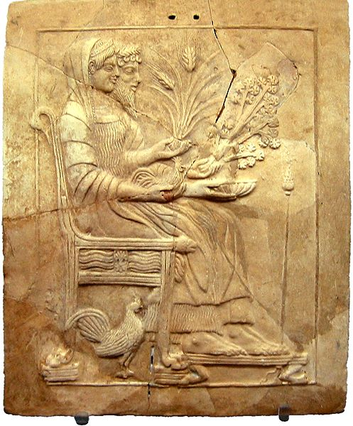

| Bronzi di Riace |
Kouros di Reggio |
Il
Museo Nazionale della Magna Grecia di Reggio Calabria è, dopo quello
di Berlino, il museo con la più vasta collezione di reperti della
Magna Grecia. I reperti conservati provengono da scavi o ritrovamenti
effettuati in Calabria. Il museo originario fu istituito nel 1882 e
aveva sede presso il Palazzo Arcivescovile. Dopo il terremoto
violentissimo del 1908 che distrusse Messina e Reggio Calabria,
l'archeologo Paolo Orsi propose di costruire un nuovo museo che
contenesse i tesori della Magna Grecia ritrovati negli scavi e la
collezione del precedente museo. L'edificio venne progettato da
Marcello Piacentini e realizzato fra il 1932 e il 1941, ma a causa
della Seconda Guerra Mondiale, venne aperto solo nel 1959. È uno
dei musei meglio costruiti, grazie ad ambienti espositivi grandi e
alle ampie vetrate che li illuminano. Oltre ai tesori della Magna
Grecia, vi sono reperti della Preistoria, del Periodo Romano e
Bizantino e subacquei, come anfore e ancore. I reperti più
significativi greci sono i Bronzi di Riace, due statue in bronzo
perfettamente conservate, realizzate nel V secolo a.C. e ritrovate in
mare, la Testa del Filosofo, un importante esempio di ritrattistica
greca, il Kouros di Reggio, la statua in marmo di un atleta, esposta
alle Olimpiadi invernali di Torino 2006, la testa in marmo di Apollo
Aleo e i Pinakes (al singolare Pinax), quadretti votivi in terracotta dedicati alla Dea
Persefone.
|  |
||
| Testa del Filosofo |
Apollo Aleo |
Pinax con Persefone e Ade |
Home Territorio Popolazione Attività economiche Specialità Personaggi Curiosità